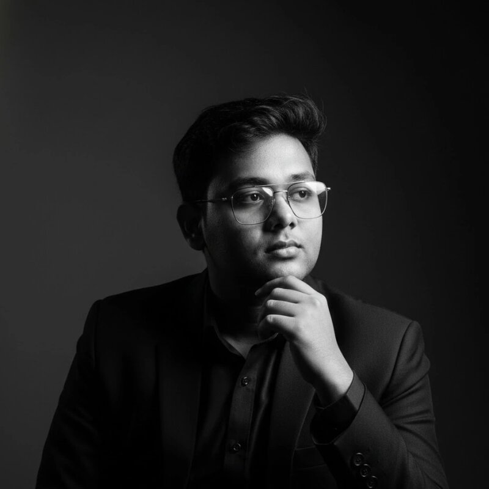

>Hey, I'm Ryan Zannah — a Software Engineer and Digital Strategist with a passion for building things that matter.
I'm driven by a simple belief: technology should solve real problems and create real value. Whether it's a web application, a brand strategy, or an AI-powered platform — I pour everything into making it great.
"I’m a developer based in Bangladesh with a mindset that has always been geared toward building and optimizing. I was born in Dhaka in 19th March 2010. Soo, Now I am 16.....My journey into tech wasn't just about learning syntax; it was about the realization that I could build digital solutions from my bedroom that reach people anywhere in the world. I really love it!!! Starting with Python and moving into web development, I’ve spent the last few years bridging the gap between clean code and digital strategy. I’m driven by the challenge of taking a complex problem and breaking it down into a functional, user-centric application. Beyond the screen, I’m an athlete at heart. Whether it’s the strategic patience of cricket, Football or the fast-paced coordination of competitive gaming . I also played E-Sports for many days then I again leave because in my heart I always wanna be a software engineer,I always try my best 🫠, In everywhere I would always try to give my best!!! ..I carry that same competitive energy into my software projects. My goal is simple: to keep evolving as a builder and to create platforms that don't just exist, but actually perform."
I'm currently preparing for an exciting move to Germany, studying the language at C1 level while continuing to build my projects and grow my skills.
My biggest project right now is Skypics — a 3D AI social media platform for nature photography. I believe the next generation of social media will be immersive, AI-powered, and niche-focused. Skypics is my bet on that future.
I wrote my very first lines of Python and discovered a passion for building software.What started as curiosity quickly turned into a deep drive to solve problems through code.
Founded Qorava Digital as a general business entity. I started helping businesses establish their unique digital presence through strategic branding and creative content
Conceptualized Skypics, a social media platform dedicated to real-time sky photography. This project represents my vision of blending technology with the beauty of nature.
Began an intensive journey to master the German language, aiming for C1 fluency. My goal is to bridge my engineering skills with world-class vocational training in Germany.
"Successfully completed my 'SSC' examinations" and now fully dedicated to developing Skypics. I’m constantly refining my software engineering skills and preparing for the next big chapter in Europe.
Sky Photography
Nature & cloudsCoding
Building productsGerman Culture
Language & travelArtificial Intelligence
Future of techSocial Media
Strategy & growthStartups
Building big things